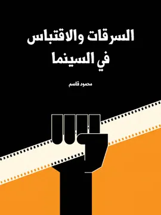

السرقات والاقتباس في السينما

قراءة عربية أصلية محددة النطاق في الصفحات 9 إلى 14 من ملف PDF المرتبط، وليست تلخيصا كاملا للكتاب. نناقش ما تدعمه هذه المقاطع فقط.
نحو سينما مقارنة: الكلمة أسبق من الصورة
يفتتح قاسم كتابه بملاحظة صادمة: باستثناء مجموعة قليلة من أفلامها التي تقترب من الأربعة آلاف وخمسمائة فيلم، فإن أغلب أفلام السينما المصرية مستورد من الخارج، إما تأثرًا بموجات عالمية تلقى ذيوعًا في مرحلة معينة، أو بالاقتباس المباشر من أفلام أو روايات أو مسرحيات؛ وبمثل هذا التأثير البيني يتضح مدى أهمية الدراسات المقارنة، أو ما يسميه تجاوزًا بالسينما المقارنة. وتدرس السينما المقارنة في أبسط صورها العلاقة بين الكلمة المكتوبة في النص الأدبي وبين الصورة الفيلمية؛ فالصورة في الأساس كلمة مسطورة بطريقة يمكن للعين أن تراها بعد أن تخلطها، فإذا صعب تجسيد الكلمة أحيانًا، صعب وصف الصورة بالكلمة بنفس الدقة مهما بلغت بلاغة الكاتب. والكلمة هي الأسبق: في البدء كانت الكلمة، ثم جاءت الصورة تحاول تجسيدها أو تخلق تعبيرًا مختلفًا وإن كانت له صلة بها. ويقرر أن السينما ستظل ملتصقة بالأدب تنهل منه وتعتمد عليه، وأن الفيلم يحمل رؤية مختلفة عن النص مهما التزم بروحه؛ يصبح مصبوغًا برؤية المخرج يغير ويضيف ويحذف كما يشاء، لأنه فنان له رؤيته.
زاوية وحدود القراءة
قراءة موجزة من ص ٩ إلى ص ١٤ من أصل ٢٥٠ صفحة، تعرض التمهيد؛ أغلب أفلام السينما المصرية مستورد من الخارج، وأهمية الدراسات المقارنة بين الكلمة والصورة، لا الكتاب كاملًا.
الطبعة والقراءة
هذه النسخة من الكتاب صادرة ومتاحة مجانًا بموجب اتفاق قانوني بين مؤسسة هنداوي والسيد الأستاذ محمود قاسم.
تنزيل PDF المجاني ↓ القراءة والمصدر الرسمي ↗